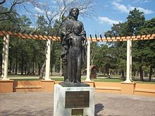

es una festividad que se celebra en honor a las madres en todo el mundo, en diferentes fechas del año según el país. Su origen contemporáneo se remitiría al Mother's Friendship Day y las reuniones Mother's Day Meetings organizadas en 1865 o 1868 por Ann Maria Reeves Jarvis, en que las madres se reunían para intercambiar opiniones sobre distintos temas de actualidad.
Historia

Las primeras celebraciones del Día de la Madre se remontan a la antigua Grecia, donde se le rendían honores a Rea, la madre de los dioses Zeus, Poseidón yHades.
Igualmente los romanos llamaron a esta celebración Hilaria cuando la adquirieron de los griegos. Se celebraba el 15 de marzo en el templo de Cibeles y durante tres días se realizaban ofrendas.
Los católicos transformaron estas celebraciones para honrar a la Virgen María, la madre de Jesús. En el santoral católico el 8 de diciembre se celebra la fiesta de la Inmaculada Concepción, fecha que los católicos adoptaron para la celebración del Día de la Madre.
En Inglaterra hacia el siglo XVII, tenía lugar un acontecimiento similar, también relacionado con la Virgen, que se denominaba Domingo de las Madres. Los niños concurrían a misa y regresaban a sus hogares con regalos para sus progenitoras. Además, como muchas personas trabajaban para gente acaudalada y no tenían la oportunidad de estar en sus hogares, ese Domingo se le daba el día libre para visitar a sus familias.4 5
En 1870 la poetisa y activista Julia Ward Howe escribió la Proclama del Día de la Madre, un apasionado llamado a la paz y al desarme. Durante un par de años, Ward Howe empeñó sus esfuerzos en llevar a cabo un congreso de esta naturaleza.
frases del Día de la mamá
Eres la única persona del mundo que siempre está, de forma incondicional. Si te rechazo, me perdonas. Si me equivoco, me acoges. Si los demás no pueden conmigo, me abres una puerta. Si estoy feliz, celebras conmigo. Si estoy triste, no sonríes hasta que me hagas reír. Eres mi amiga incondicional. Gracias.
Una madre es capaz de dar todo sin recibir nada. De querer con todo su corazón sin esperar nada a cambio. De invertir todo en un proyecto sin medir la rentabilidad que le aporte su inversión. Una madre sigue teniendo confianza en sus hijos cuando todos los demás lo han perdido. Gracias por ser mi madre.
Mi madre encuentra la felicidad cuando yo la encuentro. Cuando yo vivo algo hermoso, lo vive a través de mi experiencia. Mi madre reza por mí, incluso cuando yo solo rezo por mi mismo. Mi madre me daría el mundo entero si fuese capaz. Gracias Mamá.